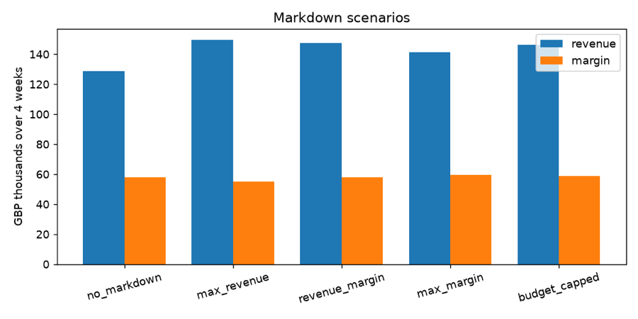

+14.6% revenue at the same margin
Price Elasticity & Markdown Optimization
Estimated how demand for 60 retail products responds to price, then picked the best markdown for each one with a mixed-integer program under inventory and margin limits.
View on GitHub